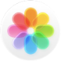
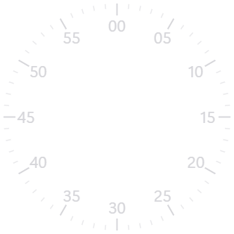
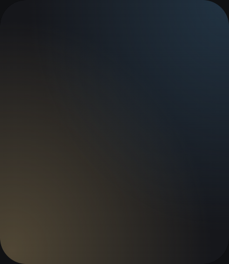

SOURCE-MATCHED ASSETS / 390 × 450 / DESIGN HANDOFF 01
使用同一套图标。
按同一份尺寸落地。
六页批准稿的素材、尺寸、文字度量与验收要求已放在一起。图标从原始输入导出，几何来自实际页面测量；这不是重新设计的替代稿，也不是已经通过的固件。
发布边界：包含 Apple 官方参考图片的同源副本，未取得再分发许可；不自动导入公开固件、不自动推送。本包未复制 Windows 或 Apple 字体。参考和项目绘制素材均记录来源，许可与字体替代仍是独立准入项。
先接蜂窝页，确认后再铺开
本设计包 → 工程师接入 System.grid → 同输入对照、架构复核与你确认 → 其余五页 → 主机 / 双工具链 / 获批后的板验
- 保留现有业务、路由、输入取消与 OOM 处理，只替换视觉资源与几何；不要覆盖工程师已有修改。
- 蜂窝的每个图标使用下表对应文件，不再以信息圆圈、九点、时钟等占位符替换电话、消息、活动、照片等 App 身份。
- PNG 与 SVG 是素材母版；raw 是格式明确的像素载荷，不是带 LVGL header 的成品 .bin。工程师负责导入容器/描述符及目标支持验证。
- 只接入选用的一种编码，保留文件 ID、尺寸、哈希；缺资源应明确报错或显示审定占位，不静默换成另一个图标。
- 公开发布前先解决素材许可。若必须换素材或字体，提交替代稿与你确认，不直接当成原稿已还原。
本次只交付设计资源与校验工具，校验仅生成报告和对照图；保留工程师在制固件，未生成目标镜像、未连接串口/J-Link、未推送。
蜂窝：不是十七个同样大的彩色圆
图标的中心、直径、内容和色彩独立固定。坐标原点是屏幕左上角，圆形命中使用同一中心和半径，不用包围矩形四角。
全量图标样片只证明外观，不能把 17 个 App 都标成 READY。当前只有设置、计时器、秒表和闹钟四个真实入口；其他入口需要明确演示/未接入边界。
默认几何按下表；批准稿的放大展示为 scale(1.16)。本包不重写既有手势状态机或批准新倍率范围。缩放、平移、取消和返回恢复仍需输入回归。
| 编号 / 图标 | 中心 x,y | 直径 px | 准确资源文件 | 当前真实入口 |
|---|---|---|---|---|
| 1 · Phone | 111, 61 | 64 | ICt_Phone_AppIcon-64x64-1cc081 | 明确演示／未接入 |
| 2 · Mail | 195, 58 | 71 | ICt_Mail_AppIcon-71x71-8651bc | 明确演示／未接入 |
| 3 · Messages | 279, 61 | 64 | ICt_Messages_AppIcon-64x64-f0d6c7 | 明确演示／未接入 |
| 4 · Mindfulness | 64, 140 | 65 | ICt_Mindfulness_AppIcon-65x65-dffccf | 明确演示／未接入 |
| 5 · Activity | 145, 135 | 83 | ICt_Activity_AppIcon-83x83-2fd12f | 明确演示／未接入 |
| 6 · Workout | 244, 138 | 83 | ICt_Workout_AppIcon-83x83-d22dbc | 明确演示／未接入 |
| 7 · Settings | 326, 143 | 65 | ICt_Settings_AppIcon-65x65-937ae8 | IW_PAGE_SETTINGS |
| 8 · Timers | 97, 228 | 80 | ICt_Timers_AppIcon-80x80-bee344 | IW_PAGE_TIMER_LIST |
| 9 · Calendar | 195, 228 | 91 | ICt_CalendarAppIcon-91x91-9b78bd | 明确演示／未接入 |
| 10 · Stopwatch | 292, 228 | 80 | ICt_Stopwatch_AppIcon-80x80-fa169d | IW_PAGE_STOPWATCH |
| 11 · WorldClock | 59, 316 | 67 | ICt_WorldClock_AppIcon-67x67-5f14f8 | 明确演示／未接入 |
| 12 · Maps | 143, 318 | 79 | ICt_Maps_AppIcon-79x79-b6b7ac | 明确演示／未接入 |
| 13 · Weather | 240, 318 | 79 | ICt_Weather_AppIcon-79x79-f3e41a | 明确演示／未接入 |
| 14 · Alarms | 323, 315 | 67 | ICt_Alarms_AppIcon-67x67-f2d14f | IW_PAGE_ALARM_LIST |
| 15 · Compass | 102, 396 | 64 | ICt_Compass_AppIcon-64x64-13980a | 明确演示／未接入 |
| 16 · Photos | 195, 394 | 78 | ICt_Photos_AppIcon-78x78-257cb6 | 明确演示／未接入 |
| 17 · Sleep | 289, 394 | 64 | ICt_Sleep_AppIcon-64x64-944c3e | 明确演示／未接入 |
{kind=link}
{kind=link}
{kind=link}
{kind=link}
{kind=link}
{kind=link}
{kind=link}
{kind=link}
{kind=link}
{kind=link}
{kind=link}
{kind=link}
{kind=link}
{kind=link}
{kind=link}
{kind=link}
{kind=link}
可以交给工程师导入的资源
原 PNG 保留不变；渲染尺寸版本只执行批准稿的缩放与 CSS 滤色。项目 SVG 来自批准稿的同一条路径，不手工近似重画。单色图符可由工程师进一步选择 A8 遮罩，但必须保留当前轮廓与抗锯齿。
推荐的图标/图符 RGB565＋A8 原始载荷合计 378.5 KiB；可选控制中心纯背景 RGB565 为 342.8 KiB。刻度装饰另算；这些不包含现有固件资源、段头、对齐和解码缓存，不能当作固件预算已经通过。
像素格式、透明边缘与导入规则
- PNG：高精度可视母版，有透明度时保留 alpha，不先铺黑底再缩放。
- BGRA8888：B,G,R,A 紧密字节序，对应 little-endian 逻辑字 0xAARRGGBB，非预乘 alpha。
- RGB565＋A8：先 RGB565 小端颜色平面（每行宽×2），后 A8 平面（每行宽）；不等于所有目标驱动都已支持。
- 只有纯背景另给无 alpha 的 RGB565。所有 raw 文件无资源头；工程师验证 LVGL/EPIC 格式、stride、alpha 与刷屏路径后再接入。
- 同一图标不要把原图、PNG、两种 raw 全部链接；资源上限继续 1,048,576 B，不自动上调。
| 素材 / 稳定 ID | 尺寸 / 来源 | 原件与导入载荷 | RGB565＋A8 大小 / 许可 |
|---|---|---|---|
ICt_Phone_AppIcon-64x64-1cc081 | 64 × 64 Apple 参考原图同源 | PNG · 原文件 RGB565＋A8 / BGRA8888 | 12.0 KiB 许可待核查，不自动发布 |
ICt_Mail_AppIcon-71x71-8651bc | 71 × 71 Apple 参考原图同源 | PNG · 原文件 RGB565＋A8 / BGRA8888 | 14.8 KiB 许可待核查，不自动发布 |
ICt_Messages_AppIcon-64x64-f0d6c7 | 64 × 64 Apple 参考原图同源 | PNG · 原文件 RGB565＋A8 / BGRA8888 | 12.0 KiB 许可待核查，不自动发布 |
ICt_Mindfulness_AppIcon-65x65-dffccf | 65 × 65 Apple 参考原图同源 | PNG · 原文件 RGB565＋A8 / BGRA8888 | 12.4 KiB 许可待核查，不自动发布 |
ICt_Activity_AppIcon-83x83-2fd12f | 83 × 83 Apple 参考原图同源 | PNG · 原文件 RGB565＋A8 / BGRA8888 | 20.2 KiB 许可待核查，不自动发布 |
ICt_Workout_AppIcon-83x83-d22dbc | 83 × 83 Apple 参考原图同源 | PNG · 原文件 RGB565＋A8 / BGRA8888 | 20.2 KiB 许可待核查，不自动发布 |
ICt_Settings_AppIcon-65x65-937ae8 | 65 × 65 Apple 参考原图同源 | PNG · 原文件 RGB565＋A8 / BGRA8888 | 12.4 KiB 许可待核查，不自动发布 |
ICt_Timers_AppIcon-80x80-bee344 | 80 × 80 Apple 参考原图同源 | PNG · 原文件 RGB565＋A8 / BGRA8888 | 18.8 KiB 许可待核查，不自动发布 |
ICt_CalendarAppIcon-91x91-9b78bd | 91 × 91 Apple 参考原图同源 | PNG · 原文件 RGB565＋A8 / BGRA8888 | 24.3 KiB 许可待核查，不自动发布 |
ICt_Stopwatch_AppIcon-80x80-fa169d | 80 × 80 Apple 参考原图同源 | PNG · 原文件 RGB565＋A8 / BGRA8888 | 18.8 KiB 许可待核查，不自动发布 |
ICt_WorldClock_AppIcon-67x67-5f14f8 | 67 × 67 Apple 参考原图同源 | PNG · 原文件 RGB565＋A8 / BGRA8888 | 13.2 KiB 许可待核查，不自动发布 |
ICt_Maps_AppIcon-79x79-b6b7ac | 79 × 79 Apple 参考原图同源 | PNG · 原文件 RGB565＋A8 / BGRA8888 | 18.3 KiB 许可待核查，不自动发布 |
ICt_Weather_AppIcon-79x79-f3e41a | 79 × 79 Apple 参考原图同源 | PNG · 原文件 RGB565＋A8 / BGRA8888 | 18.3 KiB 许可待核查，不自动发布 |
ICt_Alarms_AppIcon-67x67-f2d14f | 67 × 67 Apple 参考原图同源 | PNG · 原文件 RGB565＋A8 / BGRA8888 | 13.2 KiB 许可待核查，不自动发布 |
ICt_Compass_AppIcon-64x64-13980a | 64 × 64 Apple 参考原图同源 | PNG · 原文件 RGB565＋A8 / BGRA8888 | 12.0 KiB 许可待核查，不自动发布 |
 ICt_Photos_AppIcon-78x78-257cb6 | 78 × 78 Apple 参考原图同源 | PNG · 原文件 RGB565＋A8 / BGRA8888 | 17.8 KiB 许可待核查，不自动发布 |
ICt_Sleep_AppIcon-64x64-944c3e | 64 × 64 Apple 参考原图同源 | PNG · 原文件 RGB565＋A8 / BGRA8888 | 12.0 KiB 许可待核查，不自动发布 |
music-59x59-4d73be | 59 × 59 项目绘制／背景 | PNG · SVG RGB565＋A8 / BGRA8888 | 10.2 KiB 许可待核查，不自动发布 |
restore-25x25-e7a179 | 25 × 25 项目绘制／背景 | PNG · SVG RGB565＋A8 / BGRA8888 | 1.8 KiB 许可待核查，不自动发布 |
decoration-92x92-f49b0e | 92 × 92 项目绘制／背景 | PNG · SVG RGB565＋A8 / BGRA8888 | 24.8 KiB 许可待核查，不自动发布 |
flower-65x65-e07948 | 65 × 65 项目绘制／背景 | PNG · SVG RGB565＋A8 / BGRA8888 | 12.4 KiB 许可待核查，不自动发布 |
run-61x61-9c588c | 61 × 61 项目绘制／背景 | PNG · SVG RGB565＋A8 / BGRA8888 | 10.9 KiB 许可待核查，不自动发布 |
close-26x26-6150ef | 26 × 26 项目绘制／背景 | PNG · SVG RGB565＋A8 / BGRA8888 | 2.0 KiB 许可待核查，不自动发布 |
back-26x26-e153fd | 26 × 26 项目绘制／背景 | PNG · SVG RGB565＋A8 / BGRA8888 | 2.0 KiB 许可待核查，不自动发布 |
 decoration-333x333-f15119 | 333 × 333 项目绘制／背景 | PNG · SVG RGB565＋A8 / BGRA8888 | 324.9 KiB 许可待核查，不自动发布 |
close-32x32-f30976 | 32 × 32 项目绘制／背景 | PNG · SVG RGB565＋A8 / BGRA8888 | 3.0 KiB 许可待核查，不自动发布 |
check-36x36-fb2c9e | 36 × 36 项目绘制／背景 | PNG · SVG RGB565＋A8 / BGRA8888 | 3.8 KiB 许可待核查，不自动发布 |
sun-28x28-40e472 | 28 × 28 项目绘制／背景 | PNG · SVG RGB565＋A8 / BGRA8888 | 2.3 KiB 许可待核查，不自动发布 |
sun-43x43-addcf2 | 43 × 43 项目绘制／背景 | PNG · SVG RGB565＋A8 / BGRA8888 | 5.4 KiB 许可待核查，不自动发布 |
ICt_connectediPhone-24x24-acc9cd | 24 × 24 Apple 参考原图同源 | PNG · 原文件 RGB565＋A8 / BGRA8888 | 1.7 KiB 许可待核查，不自动发布 |
ICt_silentMode-24x24-cdf64a | 24 × 24 Apple 参考原图同源 | PNG · 原文件 RGB565＋A8 / BGRA8888 | 1.7 KiB 许可待核查，不自动发布 |
ICt_statusDNDFocus-24x24-20a117 | 24 × 24 Apple 参考原图同源 | PNG · 原文件 RGB565＋A8 / BGRA8888 | 1.7 KiB 许可待核查，不自动发布 |
ICt_Wifi-58x58-0ecb11 | 58 × 58 Apple 参考原图同源 | PNG · 原文件 RGB565＋A8 / BGRA8888 | 9.9 KiB 许可待核查，不自动发布 |
ICt_airplaneMode-58x58-99f564 | 58 × 58 Apple 参考原图同源 | PNG · 原文件 RGB565＋A8 / BGRA8888 | 9.9 KiB 许可待核查，不自动发布 |
ICt_pingPhone-58x58-78008a | 58 × 58 Apple 参考原图同源 | PNG · 原文件 RGB565＋A8 / BGRA8888 | 9.9 KiB 许可待核查，不自动发布 |
ICt_flashlight-58x58-18dfd7 | 58 × 58 Apple 参考原图同源 | PNG · 原文件 RGB565＋A8 / BGRA8888 | 9.9 KiB 许可待核查，不自动发布 |
ICt_doNotDisturb-58x58-e14f6c | 58 × 58 Apple 参考原图同源 | PNG · 原文件 RGB565＋A8 / BGRA8888 | 9.9 KiB 许可待核查，不自动发布 |
 control-background-only | 390 × 450 项目绘制／背景 | PNG · 页面样式导出 RGB565＋A8 / BGRA8888 不透明 RGB565 | 514.2 KiB 许可待核查，不自动发布 |
{kind=link}
{kind=link}
{kind=link}
{kind=link}
{kind=link}
{kind=link}
{kind=link}
{kind=link}
{kind=link}
{kind=link}
{kind=link}
{kind=link}
{kind=link}
{kind=link}
{kind=link}
{kind=link}
{kind=link}
{kind=link}
{kind=link}
{kind=link}
{kind=link}
{kind=link}
{kind=link}
{kind=link}
{kind=link}
{kind=link}
{kind=link}
{kind=link}
{kind=link}
{kind=link}
{kind=link}
{kind=link}
{kind=link}
{kind=link}
{kind=link}
{kind=link}
{kind=link}
{kind=link}
{kind=link}
{kind=link}
{kind=link}
{kind=link}
{kind=link}
{kind=link}
{kind=link}
{kind=link}
{kind=link}
{kind=link}
{kind=link}
{kind=link}
{kind=link}
{kind=link}
{kind=link}
{kind=link}
{kind=link}
{kind=link}
{kind=link}
{kind=link}
字体和材质也必须对齐
当前浏览器实际使用：Segoe UI Variable、Microsoft YaHei UI。这些字体文件没有放进资源包，不能把 Windows/Apple 字库直接复制进公开固件。
现有固件 DroidSansFallback 是工程候选，不等同审阅稿字体。每个文字片段已记录字号、字重、字距、行高、颜色、实际字体、文本范围，以及能可靠测得的基线。工程师需制作数字与中文样条，让你确认替代字形；不能靠改变字号和挤压布局掩盖差异。
配色优先级：页面具体渐变/局部色 → 该控件状态 → 通用色彩令牌。控制中心蓝色不是直接用全局蓝涂一个实心胶囊；月亮是原图轮廓，不是圆环。字体缺口、颜色量化、真实数据差异分别登记。
RGB565：送屏保持现有格式。高精度素材可改善转换过程，但最终仍有 16 位色阶限制；本包提供 RGBA 母版与 565A8 载荷，是否采用抖动或其他转换须另做实屏对照。
SCREEN 1 / System.grid
蜂窝桌面
17 图标的画面是 V00 视觉样片，不代表 17 个真实 App。仅四个既有 READY 入口可导航；其他入口在明确的演示模式中展示，或按能力契约提示未接入，不用信息圆圈、点阵或时钟替换图标。
必须对齐
- 17 个图标身份、图形和颜色
- 每个图标独立的中心与直径
- 同一套圆几何用于绘制和命中
- 拖动/双击不穿透
工程行为验收
默认 · 按下/释放 · 拖动释放 · 取消后首击 · 空白双击 · tick=0 · 缩放和平移边界 · 跨页返回 · 无能力
组件尺寸和局部样式
| 标识 / 类 | 左上角 x,y | 宽 × 高 | 圆角 / 背景 |
|---|---|---|---|
e001 honeyfield | 0, 0 | 390 × 450 | 0px rgba(0, 0, 0, 0) |
e002 w-button app-dot | 79, 29 | 64 × 64 | 50% rgba(0, 0, 0, 0) |
e004 w-button app-dot | 159.5, 22.5 | 71 × 71 | 50% rgba(0, 0, 0, 0) |
e006 w-button app-dot | 247, 29 | 64 × 64 | 50% rgba(0, 0, 0, 0) |
e008 w-button app-dot | 31.5, 107.5 | 65 × 65 | 50% rgba(0, 0, 0, 0) |
e010 w-button app-dot | 103.5, 93.5 | 83 × 83 | 50% rgba(0, 0, 0, 0) |
e012 w-button app-dot | 202.5, 96.5 | 83 × 83 | 50% rgba(0, 0, 0, 0) |
e014 w-button app-dot | 293.5, 110.5 | 65 × 65 | 50% rgba(0, 0, 0, 0) |
e016 w-button app-dot | 57, 188 | 80 × 80 | 50% rgba(0, 0, 0, 0) |
e018 w-button app-dot | 149.5, 182.5 | 91 × 91 | 50% rgba(0, 0, 0, 0) |
e020 w-button app-dot | 252, 188 | 80 × 80 | 50% rgba(0, 0, 0, 0) |
e022 w-button app-dot | 25.5, 282.5 | 67 × 67 | 50% rgba(0, 0, 0, 0) |
e024 w-button app-dot | 103.5, 278.5 | 79 × 79 | 50% rgba(0, 0, 0, 0) |
e026 w-button app-dot | 200.5, 278.5 | 79 × 79 | 50% rgba(0, 0, 0, 0) |
e028 w-button app-dot | 289.5, 281.5 | 67 × 67 | 50% rgba(0, 0, 0, 0) |
e030 w-button app-dot | 70, 364 | 64 × 64 | 50% rgba(0, 0, 0, 0) |
e032 w-button app-dot | 156, 355 | 78 × 78 | 50% rgba(0, 0, 0, 0) |
e034 w-button app-dot | 257, 362 | 64 × 64 | 50% rgba(0, 0, 0, 0) |
渐变、描边、阴影、透明度、剪裁和子节点见该页 JSON；不能只取背景色而丢掉材质。
文字尺寸与实际浏览器字体
| 样例文字 | 文本范围 x,y / w,h | 字号 / 字重 | 实际字体 / 基线 y |
|---|
这里是文本测量范围，不是直接传给 LVGL 的控件框。控件框取组件规格；范围和基线用于对照。完整文字、Canvas 度量及字体详情在 font-spec.json。未取得可靠基线的项明确为空，不伪造数值。
SCREEN 2 / Faces.modular
模块化表盘
10:09、日期和快捷时长是视觉对照输入；实际页面消费时间/业务快照。表盘选择、取消、根页 ONRESUME 两阶段提交继续复用现有契约。
必须对齐
- 大数字字重、字距与基线
- 音乐/正念/训练图符不是通用替代符号
- 三枚 60 刻度快捷盘
- 黑底和次级圆盘层次
工程行为验收
RTC 有效/无效 · 日期跨日 · 无能力复杂功能 · 取消/失败回滚 · 根页恢复 · Home 竞争
组件尺寸和局部样式
| 标识 / 类 | 左上角 x,y | 宽 × 高 | 圆角 / 背景 |
|---|---|---|---|
e002 module-date | 278.5, 31 | 82.5 × 34.5 | 0px rgba(0, 0, 0, 0) |
e004 module-time | 187.484, 65 | 178.516 × 88.188 | 0px rgba(0, 0, 0, 0) |
e005 complication music-note | 33, 73 | 86 × 86 | 50% rgb(23, 23, 25) |
e201 complication flower-note | 33, 335 | 86 × 86 | 50% rgb(23, 23, 25) |
e204 complication run-note | 273, 335 | 86 × 86 | 50% rgb(23, 23, 25) |
e008 module-label | 32, 184 | 116.109 × 32.188 | 0px rgba(0, 0, 0, 0) |
e011 module-quick | 30, 228 | 330 × 92 | 0px rgba(0, 0, 0, 0) |
e012 quick | 30, 228 | 92 × 92 | 50% rgb(23, 23, 25) |
e075 quick | 149, 228 | 92 × 92 | 50% rgb(23, 23, 25) |
e138 quick | 268, 228 | 92 × 92 | 50% rgb(23, 23, 25) |
渐变、描边、阴影、透明度、剪裁和子节点见该页 JSON；不能只取背景色而丢掉材质。
文字尺寸与实际浏览器字体
| 样例文字 | 文本范围 x,y / w,h | 字号 / 字重 | 实际字体 / 基线 y |
|---|---|---|---|
1e002 | 278.5, 28 23.094 × 40 | 30px / 500 字距 -0.3px 行高 34.5px | Segoe UI Variable / Microsoft YaHei UI 基线 需目标字体校准 |
周二e003 | 301.594, 28 59.406 × 40 | 30px / 600 字距 -0.3px 行高 34.5px | Microsoft YaHei UI 基线 60 |
10:09e004 | 187.484, 53 178.516 × 112 | 84px / 400 字距 -4px 行高 88.2px | Segoe UI Variable 基线 144 |
计时器e008 | 65, 181 83.109 × 37 | 28px / 500 字距 -0.3px 行高 32.2px | Microsoft YaHei UI 基线 需目标字体校准 |
1:00e074 | 51.938, 256.047 48.125 × 35 | 26px / 500 字距 -0.3px 行高 29.9px | Segoe UI Variable 基线 需目标字体校准 |
3:00e137 | 170.938, 256.047 48.125 × 35 | 26px / 500 字距 -0.3px 行高 29.9px | Segoe UI Variable 基线 需目标字体校准 |
5:00e200 | 289.938, 256.047 48.125 × 35 | 26px / 500 字距 -0.3px 行高 29.9px | Segoe UI Variable 基线 需目标字体校准 |
这里是文本测量范围，不是直接传给 LVGL 的控件框。控件框取组件规格；范围和基线用于对照。完整文字、Canvas 度量及字体详情在 font-spec.json。未取得可靠基线的项明确为空，不伪造数值。
SCREEN 3 / Timers.home
计时器首页
1/3/5/10/15/30 分钟预设与自定义入口是清单内容，不能只实现首屏可见四项；当前不支持的自定义能力要明确禁用，不伪造创建成功。退出不得重置正在运行的计时器。
必须对齐
- 155 px 预设圆按钮及外轮廓
- 首屏裁切和滚动窗口
- 全部六个预设和底部自定义入口
- 数字/分钟单位的字重与间距
工程行为验收
首屏 · 滚到底部 · 点击启动 · 重复点击 · 失败 · 无能力自定义 · Back/Home
滚动区 e008：(21, 158, 348, 292)；内容高 643，最大滚动 351 px。
{kind=link}
组件尺寸和局部样式
| 标识 / 类 | 左上角 x,y | 宽 × 高 | 圆角 / 背景 |
|---|---|---|---|
e001 w-top | 0, 0 | 390 × 75 | 0px rgba(0, 0, 0, 0) |
e006 w-heading | 283.891, 57 | 77.109 × 29.891 | 0px rgba(0, 0, 0, 0) |
e007 timer-section | 30, 107 | 123.516 × 28.75 | 0px rgba(0, 0, 0, 0) |
e008 timer-grid | 21, 158 | 348 × 292 | 0px rgba(0, 0, 0, 0) |
e009 w-button preset | 26, 164 | 155 × 155 | 50% rgba(0, 0, 0, 0) |
e012 w-button preset | 207.5, 164 | 155 × 155 | 50% rgba(0, 0, 0, 0) |
e015 w-button preset | 26, 341 | 155 × 155 | 50% rgba(0, 0, 0, 0) |
e018 w-button preset | 207.5, 341 | 155 × 155 | 50% rgba(0, 0, 0, 0) |
e021 w-button preset | 26, 518 | 155 × 155 | 50% rgba(0, 0, 0, 0) |
e024 w-button preset | 207.5, 518 | 155 × 155 | 50% rgba(0, 0, 0, 0) |
e027 w-button pill | 26, 703 | 338 × 62 | 33px rgb(42, 42, 47) |
渐变、描边、阴影、透明度、剪裁和子节点见该页 JSON；不能只取背景色而丢掉材质。
文字尺寸与实际浏览器字体
| 样例文字 | 文本范围 x,y / w,h | 字号 / 字重 | 实际字体 / 基线 y |
|---|---|---|---|
10:09e005 | 302.688, 18 57.313 × 33 | 25px / 500 字距 -0.8px 行高 28.75px | Segoe UI Variable 基线 45 |
计时器e006 | 283.891, 54 77.109 × 35 | 26px / 500 字距 -0.3px 行高 29.9px | Microsoft YaHei UI 基线 82 |
所有计时器e007 | 30, 104 123.516 × 33 | 25px / 600 字距 -0.3px 行高 28.75px | Microsoft YaHei UI 基线 131 |
1e010 | 89.766, 192.625 27.469 × 67 | 50px / 600 字距 -0.3px 行高 55px | Segoe UI Variable 基线 246.625 |
分钟e011 | 78.797, 252.625 49.406 × 33 | 25px / 400 字距 -0.3px 行高 28.75px | Microsoft YaHei UI 基线 279.625 |
3e013 | 271.266, 192.625 27.469 × 67 | 50px / 600 字距 -0.3px 行高 55px | Segoe UI Variable 基线 246.625 |
分钟e014 | 260.297, 252.625 49.406 × 33 | 25px / 400 字距 -0.3px 行高 28.75px | Microsoft YaHei UI 基线 279.625 |
5e016 | 89.766, 369.625 27.469 × 67 | 50px / 600 字距 -0.3px 行高 55px | Segoe UI Variable 基线 423.625 |
分钟e017 | 78.797, 429.625 49.406 × 33 | 25px / 400 字距 -0.3px 行高 28.75px | Microsoft YaHei UI 基线 456.625 |
分钟e020 | 260.297, 429.625 49.406 × 33 | 25px / 400 字距 -0.3px 行高 28.75px | Microsoft YaHei UI 基线 456.625 |
分钟e023 | 78.797, 606.625 49.406 × 33 | 25px / 400 字距 -0.3px 行高 28.75px | Microsoft YaHei UI 基线 633.625 |
分钟e026 | 260.297, 606.625 49.406 × 33 | 25px / 400 字距 -0.3px 行高 28.75px | Microsoft YaHei UI 基线 633.625 |
自定义e027 | 156.438, 716.047 77.109 × 35 | 26px / 500 字距 -0.3px 行高 29.9px | Microsoft YaHei UI 基线 需目标字体校准 |
这里是文本测量范围，不是直接传给 LVGL 的控件框。控件框取组件规格；范围和基线用于对照。完整文字、Canvas 度量及字体详情在 font-spec.json。未取得可靠基线的项明确为空，不伪造数值。
SCREEN 4 / Alarms.edit
闹钟时间编辑
06:45 是对照草稿值；时间数字和选中字段必须动态绘制，取消不提交，确认通过服务结果后才更新模型。
必须对齐
- 333 px 表盘和 60 刻度
- 静态刻度数字与动态时分分层
- 选中绿色边框
- 取消/确认图符和触摸区域
工程行为验收
小时/分钟选中 · 边界值 · 取消 · 确认 · 回执失败 · 旧回执 · 重复返回
组件尺寸和局部样式
| 标识 / 类 | 左上角 x,y | 宽 × 高 | 圆角 / 背景 |
|---|---|---|---|
e001 w-top | 0, 0 | 390 × 75 | 0px rgba(0, 0, 0, 0) |
e006 alarm-dial-v2 | 28, 73 | 333 × 333 | 0px rgba(0, 0, 0, 0) |
e081 alarm-numbers | 87, 192 | 202.641 × 89 | 0px rgba(0, 0, 0, 0) |
e082 | 87, 192 | 87 × 89 | 21px rgba(0, 0, 0, 0) |
e084 | 202.641, 192 | 87 × 89 | 21px rgba(0, 0, 0, 0) |
e085 bottom-pair | 29, 369 | 332 × 58 | 0px rgba(0, 0, 0, 0) |
渐变、描边、阴影、透明度、剪裁和子节点见该页 JSON；不能只取背景色而丢掉材质。
文字尺寸与实际浏览器字体
| 样例文字 | 文本范围 x,y / w,h | 字号 / 字重 | 实际字体 / 基线 y |
|---|---|---|---|
10:09e005 | 302.688, 18 57.313 × 33 | 25px / 500 字距 -0.8px 行高 28.75px | Segoe UI Variable 基线 45 |
45e077 | 52.898, 222.5 24.203 × 31 | 23px / 400 字距 -0.3px 行高 26.45px | Segoe UI Variable 基线 需目标字体校准 |
24小时e080 | 161.234, 149 66.531 × 30 | 22px / 400 字距 -0.3px 行高 25.3px | Segoe UI Variable / Microsoft YaHei UI 基线 173 |
06e082 | 106.531, 205.625 47.922 × 60 | 45px / 400 字距 -0.3px 行高 51.75px | Segoe UI Variable 基线 需目标字体校准 |
:e083 | 185, 212.375 6.641 × 47 | 35px / 300 字距 -0.3px 行高 40.25px | Segoe UI Variable 基线 250.375 |
45e084 | 222.172, 205.625 47.922 × 60 | 45px / 400 字距 -0.3px 行高 51.75px | Segoe UI Variable 基线 需目标字体校准 |
这里是文本测量范围，不是直接传给 LVGL 的控件框。控件框取组件规格；范围和基线用于对照。完整文字、Canvas 度量及字体详情在 font-spec.json。未取得可靠基线的项明确为空，不伪造数值。
SCREEN 5 / Settings.display
显示与亮度
图稿的 66% 亮度、粗体关闭、全天候已打开是样例状态，不自动授权真实 AOD 或字体切换。实际值与能力不同应显示真实值/未接入；布局和图符不可因此改成占位版。
必须对齐
- 大小两枚太阳图符
- 滑杆分区和绿色值
- 列表行高度/圆角/滚动范围
- 开关与文字基线
工程行为验收
首屏/末项 · 亮度成功/失败 · 会话值 · 能力未知/不支持 · 长文案 · 返回不撤销已生效亮度
滚动区 e007：(20, 105, 350, 345)；内容高 498，最大滚动 153 px。
{kind=link}
组件尺寸和局部样式
| 标识 / 类 | 左上角 x,y | 宽 × 高 | 圆角 / 背景 |
|---|---|---|---|
e001 w-top | 0, 0 | 390 × 75 | 0px rgba(0, 0, 0, 0) |
e006 w-heading | 232.484, 57 | 128.516 × 29.891 | 0px rgba(0, 0, 0, 0) |
e007 w-body | 20, 105 | 350 × 345 | 0px rgba(0, 0, 0, 0) |
e008 section-label | 28, 105 | 334 × 32.188 | 0px rgba(0, 0, 0, 0) |
e009 brightness-v2 | 20, 151.188 | 350 × 96 | 24px rgba(0, 0, 0, 0) |
e018 w-button w-row | 20, 255.188 | 350 × 98 | 24px rgba(0, 0, 0, 0) |
e022 w-button w-row | 20, 362.188 | 350 × 98 | 24px rgba(0, 0, 0, 0) |
e028 w-button w-row | 20, 469.188 | 350 × 98 | 24px rgba(0, 0, 0, 0) |
e026 w-toggle | 288, 392.188 | 63 × 38 | 22px rgb(119, 119, 128) |
渐变、描边、阴影、透明度、剪裁和子节点见该页 JSON；不能只取背景色而丢掉材质。
文字尺寸与实际浏览器字体
| 样例文字 | 文本范围 x,y / w,h | 字号 / 字重 | 实际字体 / 基线 y |
|---|---|---|---|
10:09e005 | 302.688, 18 57.313 × 33 | 25px / 500 字距 -0.8px 行高 28.75px | Segoe UI Variable 基线 45 |
显示与亮度e006 | 232.484, 54 128.516 × 35 | 26px / 500 字距 -0.3px 行高 29.9px | Microsoft YaHei UI 基线 82 |
外观e008 | 28, 105 45.406 × 31 | 23px / 400 字距 -0.3px 行高 32.2px | Microsoft YaHei UI 基线 130 |
文字大小e020 | 39, 286.281 102.813 × 35 | 26px / 400 字距 -0.3px 行高 33.8px | Microsoft YaHei UI 基线 314.281 |
›e021 | 342.109, 283.938 8.891 × 40 | 30px / 400 字距 -0.3px 行高 34.5px | Segoe UI Variable 基线 需目标字体校准 |
粗体文本e024 | 39, 393.281 102.813 × 35 | 26px / 400 字距 -0.3px 行高 33.8px | Microsoft YaHei UI 基线 421.281 |
全天候显示e030 | 39, 485.781 128.516 × 35 | 26px / 400 字距 -0.3px 行高 33.8px | Microsoft YaHei UI 基线 513.781 |
已打开e031 | 39, 522.578 59.109 × 27 | 20px / 400 字距 -0.3px 行高 26px | Microsoft YaHei UI 基线 544.578 |
›e032 | 342.109, 497.938 8.891 × 40 | 30px / 400 字距 -0.3px 行高 34.5px | Segoe UI Variable 基线 需目标字体校准 |
这里是文本测量范围，不是直接传给 LVGL 的控件框。控件框取组件规格；范围和基线用于对照。完整文字、Canvas 度量及字体详情在 font-spec.json。未取得可靠基线的项明确为空，不伪造数值。
SCREEN 6 / System.control
控制中心首屏
96% 和连接状态仅用于固定样例；实际无电量/网络能力时显示未知或不可用。预烘焙背景不得包含电量、文字、状态图标或业务按钮。
必须对齐
- 原始 Wi-Fi/飞机/月亮/手电/查找图形
- 六个胶囊控件的矩阵
- 蓝色/紫色选中材质
- 背景暗部层次和状态栏
工程行为验收
默认 · 选中/关闭 · 能力未知/不可用 · 滚动下半屏另按对应稿 · 来源恢复 · 锁与提醒叠加
组件尺寸和局部样式
| 标识 / 类 | 左上角 x,y | 宽 × 高 | 圆角 / 背景 |
|---|---|---|---|
e001 cc-background | 0, 0 | 390 × 450 | 0px rgb(22, 23, 27) |
e002 cc-status-v2 | 144, 22 | 92 × 32 | 24px rgba(16, 19, 26, 0.8) |
e006 cc-grid-v2 | 23, 78 | 344 × 329 | 0px rgba(0, 0, 0, 0) |
e007 w-button cc-tile selected-blue | 23, 78 | 167 × 103 | 54px rgba(0, 0, 0, 0) |
e009 w-button cc-tile | 200, 78 | 167 × 103 | 54px rgba(0, 0, 0, 0) |
e011 w-button cc-tile | 23, 191 | 167 × 103 | 54px rgba(0, 0, 0, 0) |
e013 w-button cc-tile | 200, 191 | 167 × 103 | 54px rgba(0, 0, 0, 0) |
e015 w-button cc-tile | 23, 304 | 167 × 103 | 54px rgba(0, 0, 0, 0) |
e017 w-button cc-tile selected-purple | 200, 304 | 167 × 103 | 54px rgba(0, 0, 0, 0) |
渐变、描边、阴影、透明度、剪裁和子节点见该页 JSON；不能只取背景色而丢掉材质。
文字尺寸与实际浏览器字体
| 样例文字 | 文本范围 x,y / w,h | 字号 / 字重 | 实际字体 / 基线 y |
|---|---|---|---|
96%e012 | 74.016, 218.953 64.953 × 46 | 34px / 500 字距 -0.3px 行高 39.1px | Segoe UI Variable 基线 255.953 |
这里是文本测量范围，不是直接传给 LVGL 的控件框。控件框取组件规格；范围和基线用于对照。完整文字、Canvas 度量及字体详情在 font-spec.json。未取得可靠基线的项明确为空，不伪造数值。
验收：对照图要能解释每一处差异
- 固定 390×450、默认缩放、同一页状态；基准图是静态样例，不是真实服务数据。比较布局时固定测试 Provider；正常模式坚持真实数据。
- 图标身份替代为零；可见元素遗漏为零；几何与裁切按测量值，整数化后的偏差不超过 1 px。抗锯齿和字体栅格不以全屏逐像素相等判定。
- 按图标、文字、布局、材质、状态五类列差异；“像素差均值较低”不能抵消一个错误图标、漏掉的操作或越界标签。
- 六页保留目标图 / 固件主机图 / 50% 叠图；蜂窝先验图标身份与 17 个位置，再验证真实四入口、拖动释放、双击、取消和返回。
- 没有电量或连接能力时使用未知/不可用，不要求复制样例 96% 或在线图标；这些是合理的业务差异，必须有说明，不能伪造成功。
- 主机通过后独立记录 GCC/Keil 身份与资源预算；实屏、手指触摸和按键仍需另获批准后验收。未完成许可、字体或板验时，不写 V00 最终关闭。
工程师回报模板
批次：V00 / System.grid 先行 设计包：IW-V00-DESIGN-HANDOFF-1 输入：manifest.json 哈希、图标 IDs、选用编码与资源预算 实现：源码提交/工作树状态、真实四入口、其他图标能力策略 视觉：基准 / 主机帧 / 叠图；图标/字体/几何/材质/状态差异逐项说明 主机：测试命令、实际结果、输入取消/OOM/生命周期 目标构建：GCC 与 Keil 各自身份/预算，未执行就写未执行 实机：本批未授权则写未执行 阻断：素材许可、字体替代及其他欠项
来源基线：IW-VISUAL-APPROVAL-20260923-V2；导出 2026-09-23T04:23:14.725Z。所有“通过”需说明是设计包校验、主机、目标构建还是实机，不互相替代。